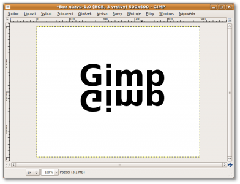
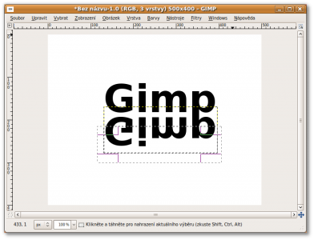

Web je již jen v režimu pro čtení a není možné přidávat nové komentáře nebo dotazy do fóra. Díky za přízeň.
Main menu
You are here
Odlesk
12. September 2009 - 15:26 — Lukáš
- Vytvoříme nový soubor s libovolnou velikostí
- Napíšeme text, nebo vložéme obrázek u kterého chceme, aby se odrážel, a duplikujeme jej
- Vrstvu svisle překlopíme pomocí Vrstva → Transformovat → Překlopit svisle a umístíme ji pod původní obrázek
 - Pomocí obdélníkového výběru označíme cca půlku vrstvy
 - Přejdeme na menu Vybrat → Zaoblení a nastavíme hodnotu 50

- Stiskneme Delete a máme hotovo :)

{kind=link}
{kind=link}
{kind=link}
Tohoto výsledku lze docílit i pomocí barevného přechodu, ale jen s tímto postupem můžeme bez problému měnit pozadí.
{kind=link}
Zdroj: www.fused-graphics.com/
Kategorie:
Web je již ukončen. Nebude zde přibývat žádný nový obsah. Případné dotazy prosím na l.bacovsky(a)outlook.cz
Comments
Zdravím, když dám Duplikovat,
Aby nápis šel přesunout,
Zdravím, 6. krok - DELETE? To
6.krok
Re: Odlesk
Re: Odlesk
Re: Odlesk
Re: Odlesk
Re: Odlesk
Re: Odlesk
Re: Odlesk
Re: Odlesk
Re: Odlesk
Add new comment